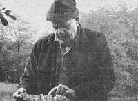
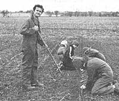
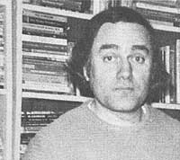

In celebration of little-known MOTHER-type folks all over.
You may have heard of western Montana's Bitterroot National Forest: It's where the longstanding controversy over clear-cutting in national forests began. You also may have heard of G.M. Brandborg, for 20 years Bitterroot's Forest Supervisor. He's the man who started the controversy.
Brandy (as his friends called him) was always a fighter, one who would stand up for the people and their natural resources. To hear him tell it, that's what a Forest Service worker was supposed to be. Gifford Pinchot (the National Forest system's first chief and a personal friend of G.M. Brandborg's) was that kind of man, and he molded that kind of outfit back in the early part of the century.
Guy M. Brandborg came from his native Minnesota to begin working for the Forest Service-as an assistant ranger at the Lewis and Clark National Forest in Montana-in 1912. Over the years that followed, Mr. Brandborg rose through the ranks until finally-in 1935-he became Forest Supervisor at Bitterroot.
When Mr. Brandborg retired in 1955, he refused to retire as a concerned conservationist. Instead, he kept a watchful eye on Lie national forest he'd managed for so many years, and when he saw special interests begin to dictate policy in the Forest Service, he protested . . . loudly.
Brandy's first successful campaign was to save the upper Selway River drainage (now protected as a designated Wild River) from would-be exploiters. Then, in the mid-1960's, came the massive clear-cuts. Logging companies-with the tacit approval of the Forest Service-razed to the ground literally hundreds of acres of precious forest at a time, leaving the landscape permanently damaged. Brandy fought back, and-though the struggle would last through the 60's and into the 70's-the retired forester and his cohorts ultimately achieved victory. The logging interests were forced to capitulate.
G.M. Brandborg died on March 11,1977, shortly after his 84th birthday. His spirit continues to live, however, and his long career and effective work continue to be an inspiration to all who knew him.- Mark J. Boesch.
Happy Hill Farm is a foster home with a difference. The difference is C. Edward Shipman, a 43-year-old former ad man, real estate developer, and part-time Baptist preacher who-as Founder and Director of the farm-believes that wholistic gardening and animal husbandry may have something to offer in the rehabilitation of delinquent children.
Happy Hill is licensed by the state of Texas to enroll youngsters (grades 1 through 12) from broken homes for the purpose of teaching them academics and/or vocational skills, and spiritual values. The institution is private, nondenominational, and supported by (mostly small) donations.
But that's where the resemblance to most "children's homes" ends. Happy Hill-situated on 266 acres of fertile valley land near Glen Rose, Texas-boasts some 125 acres of cultivated land . . . land on which Ed and his wife, Gloria, teach two dozen youngsters how to grow a multitude of crops, including carrots, corn, okra, tomatoes, lettuce, and Israeli melons. ("Best melons you ever tasted! " Ed proclaims enthusiastically.)
The Shipmans are also teaching their young pupils how to husband the farm's growing stock of ducks, geese, African guineas, turkeys, rabbits, Nubian goats, cattle, and other livestock. "The point of all this, of course, is to bring the youngsters closer to nature," Ed explains. "At the same time, though, we're all rapidly becoming self-sufficient."
And the children? "They're turning on to it like nothing I've ever seen!" Ed says.
Happy Hills Farm: There's no other children's home quite like it . . . thanks to Ed and Gloria Shipman.- John B. Calhoun, Jr.
Lots of people go into the bookselling business every year. Few people, however, do it with quite the zeal and determination of Omar Kateeb.
Two years ago-after reading an article (reprinted from MOTHER) in a Chicago Sunday paper about the paperback book exchange business-Omar, 41, and his wife, Sandra, scrounged all the free paperback books they could (about 2,500 in all) and began selling them from a 300-square-foot store in the Chicago suburb of Oak Park. The Kateebs christened their used book operation The Paperback Exchange.
Today, The Exchange is a three-store chain (with new branches in Berwyn and Chicago) employing eleven people and encompassing a total inventory of tens of thousands of books. And Omar-who's kept his regular job as a chemical salesman all this time-says he fully intends to open more stores in the future.
Why are Omar Kateeb's used book outlets so successful? It could be because of his book pricing policy. (Customers receive 70%r of the cover price in credit for each volume they bring in, but are charged only 50%r of cover price-payable in credit-plus 15 cents cash for each title they purchase.) Then again, it could be because the folks who run the stores make it a point to get to know their customers. Or it could be because free coffee and tea are provided at each Exchange for people who just want to browse.
Most likely, though, Kateeb's stores are as successful as they are because he puts more into them than he takes out. The self-made bookseller has yet to pocket any of his profits for his own use. Instead, he plows all excess cash right back into the shops and radio and newspaper advertisements for his small-but-growing empire.
"It's a lot more work-and more hours-than I imagined," Omar says of the book exchange business, "but I love every minute of it."
B. Dalton, meet Omar Kateeb.- Bernard Lyons.
Know someone-sung or unsung-who's doing something of merit in holistic gardening, alternative energy, conservation self-employment, low-cost house construction, or any other field of endeavor featured in MOTHER? A fact-filled. 450- to 500-word essay describing that person and a sharp, glassy, black-and-white photo can-upon acceptance far use in PROFILES-earn you a fast, flat $50. Send your contribution to: PROFILES Editor, THE Mother Earth News (restricted) , P.O. Box 70, Hendersonville, N.C.28739.
|
 |
 |
 |